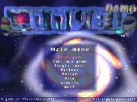
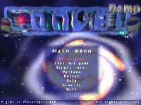

You control a small green and cuddlesome alien-slave which is made to
transport cargo. You have to move containers to the place that is slated
for them. Such a container is easy to move: You've to route your little
alien to an object and move it in front of you ... inasmuch there's no
obstacle. The problem is not to move into a dead-end street. However, if
it happens the only thing that can help you is an extra. Beside this
basic principles there are some other defiances. As an example some
boxes can only be moved into special mountings, fields of force obstruct
your way until the correct switcher is pushed or you've to swat your
enemies with the containers. But there are some aids to help you. You're
able to move the containers over a long distance with the help of
'beamers'. The beamers can be used to bypass dead-end streets as well.
Small extras help you by giving you the force to move several boxes
simultaneously or by giving you the ability to pull the containers, what
can be quite helpfully.
|
{kind=link}
 
